卷宗目录与原文
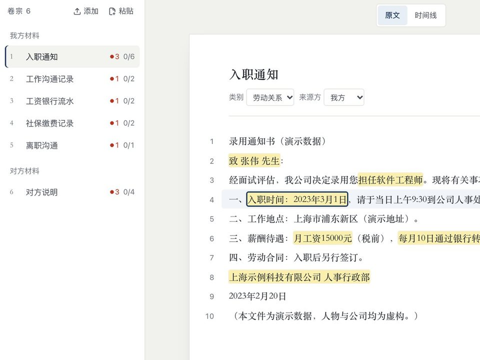
支持 txt、md、docx 和可提取文字的 pdf，可拖拽上传，也可以绑定案件文件夹同步新文件。每一段都有段号，点开就是原文。
案镜怎么用
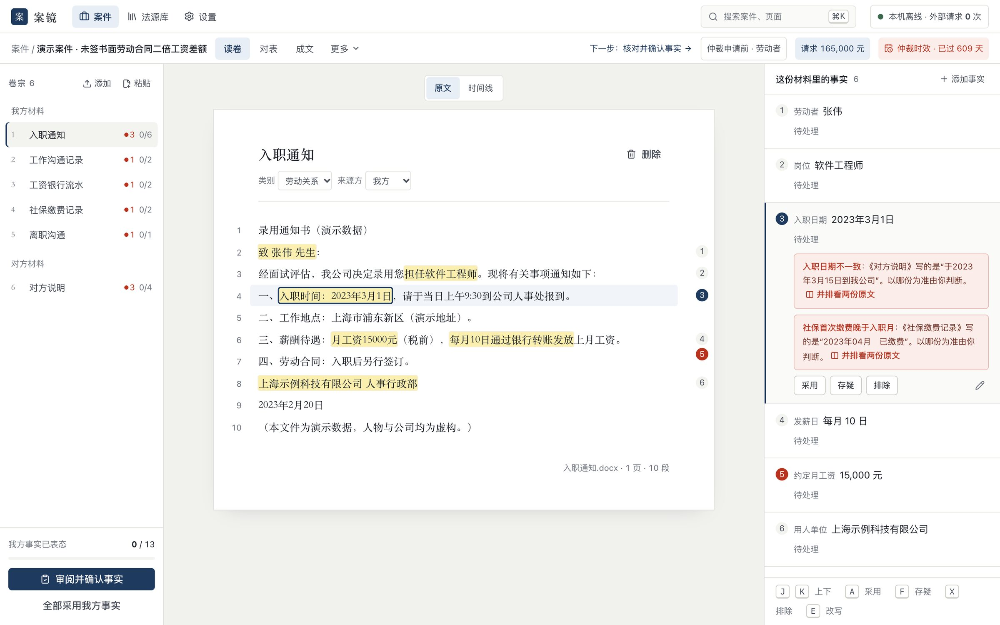
下面两个小工具在你的浏览器里运行，不上传、不保存你输入的内容。金额口径与案镜里的一致，口径有分歧的地方直接写出来。
下面是申请书里的一段。试着把方括号里的编号改成一个不存在的，比如 劳动合同法-99，再点核对。
点“核对引用”，逐条看每个引用在法源库里是否存在。
这里只演示“引用是否存在”一项。案镜里还会核对正文引用是否登记了来源、事实是否由律师确认、日期和金额是否与确认的事实一致，任何一项不通过都不能定稿。
从材料到归档
案件内只有三个工作面：读卷、对表、成文。期限、质证和归档从顶栏进入。

支持 txt、md、docx 和可提取文字的 pdf，可拖拽上传，也可以绑定案件文件夹同步新文件。每一段都有段号，点开就是原文。
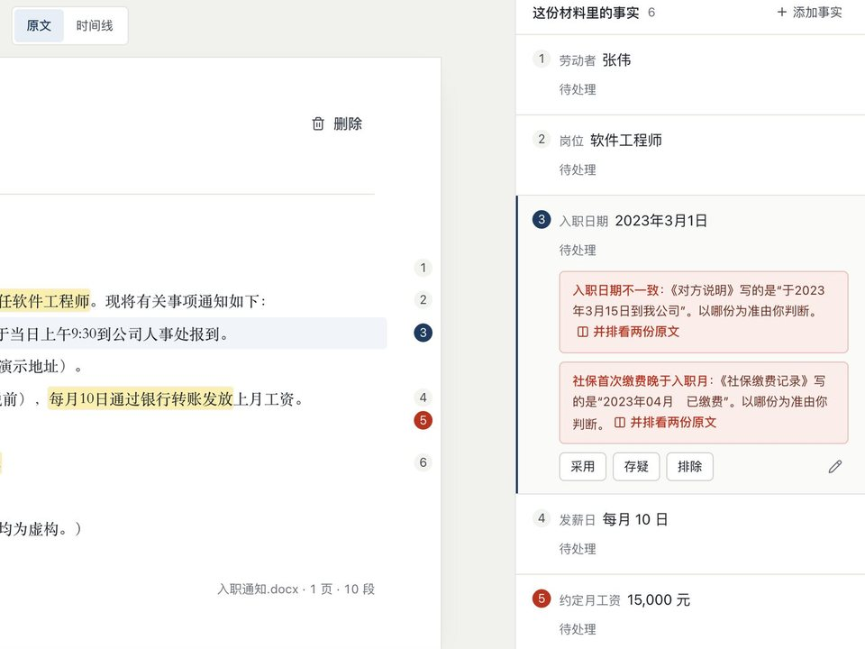
抽出的事实直接高亮在原文里，右侧逐条采用、存疑或排除，也可以改写表述，材料原话保留。键盘就能走完一遍。
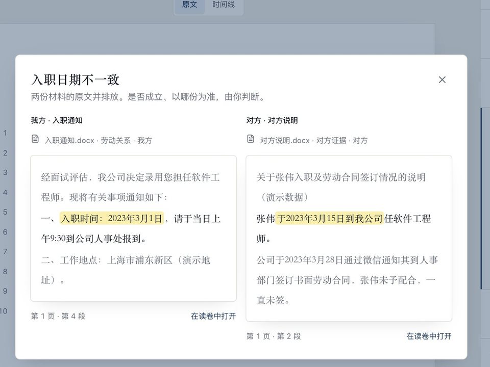
入职日期、离职日期、工资金额、社保月份，以及对方说法和我方记录之间的冲突，两处原文并排放，由律师判断。
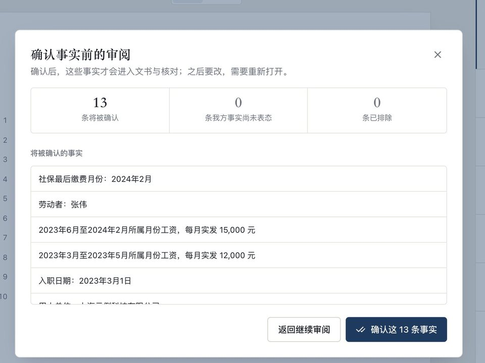
确认之前，列出将确认几条、几条还没表态、哪些关键数据和表述被改过。确认之后，文书只使用已确认的事实。
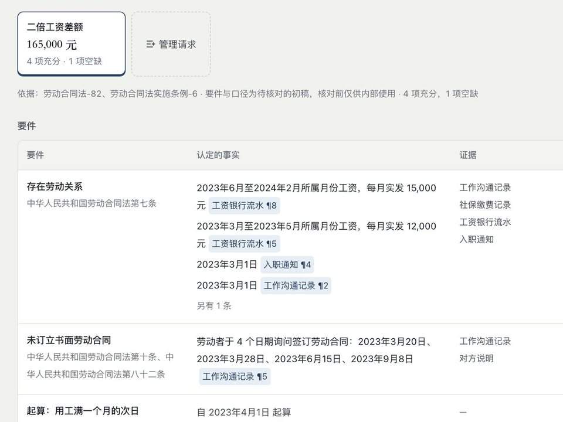
选一项请求，要件逐行列出认定的事实、证据、对方怎么说和状态。每条事实后面跟着出处编号，点开就是原文。
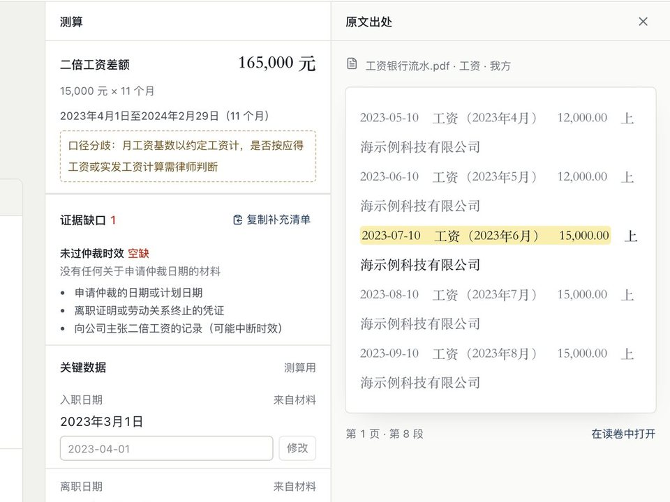
每项请求单独测算，口径有分歧的写明需律师判断。缺的材料列成清单，可以复制发给当事人，不把当事人说法当成已证事实。
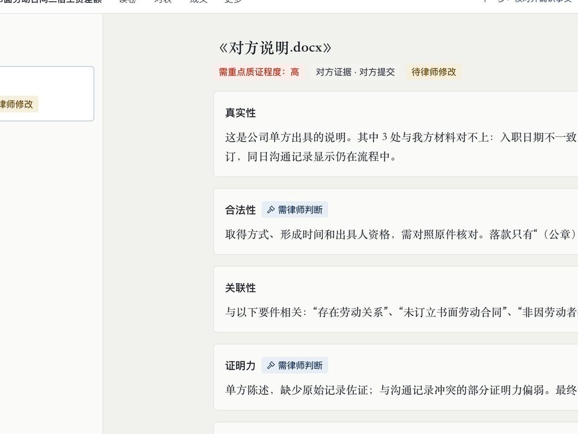
对方证据逐份给出真实性、合法性、关联性、证明力的意见和建议追问。律师改写的意见进入文书，系统原文保留。
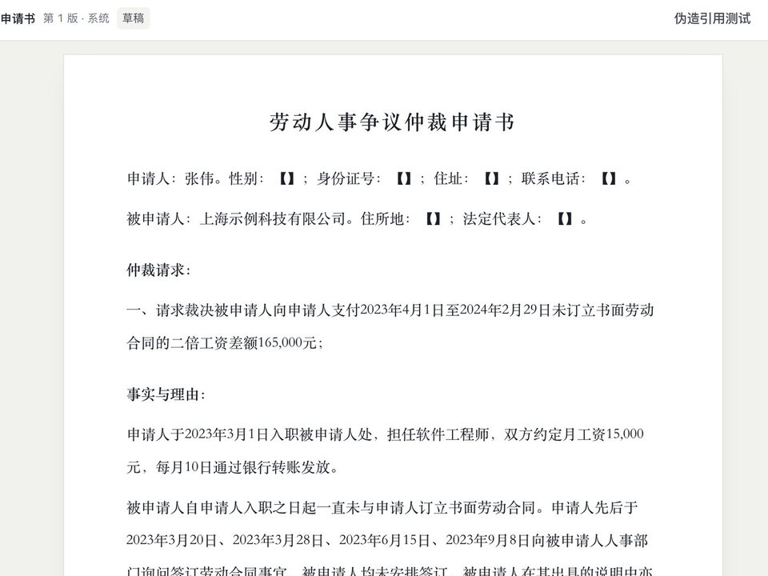
按程序阶段生成仲裁申请书、起诉状、答辩状。每段可以单独修改，引用显示为脚注，每次保存是新版本，可导出 Word。
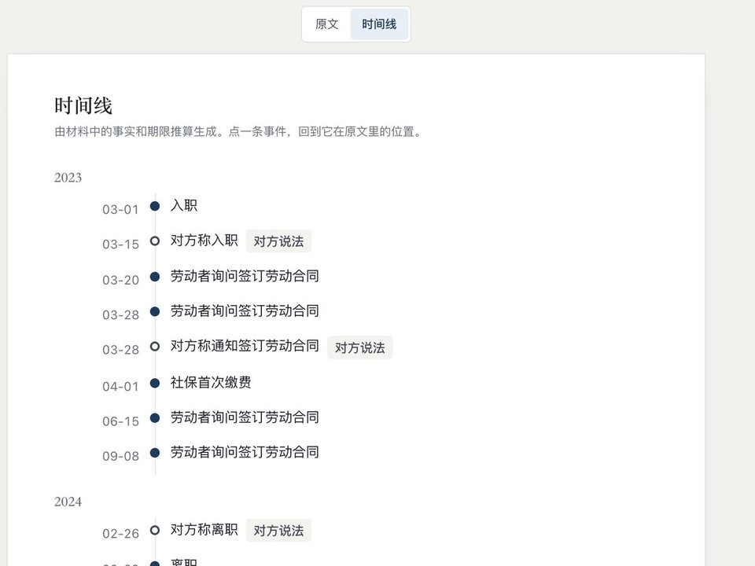
事实按日期排成时间线，点一条回到原文。录入起算日期后推算仲裁时效、起诉期限，可导出日历。
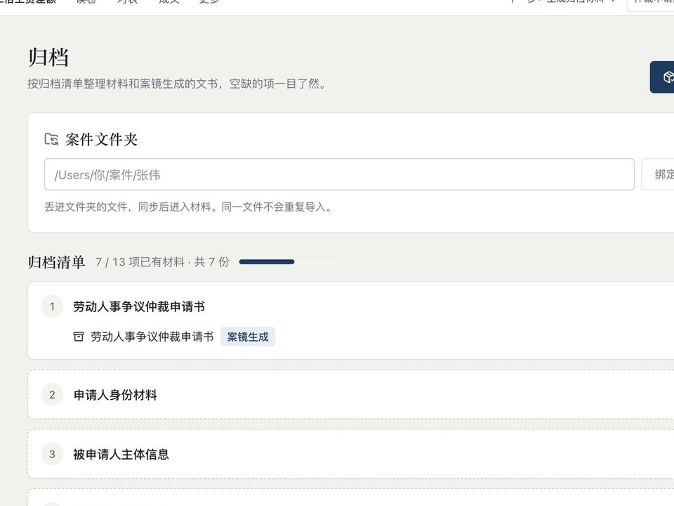
定稿后按清单整理归档，空缺项一目了然。也可以粘贴法院短信，解析案号并推荐匹配的案件。
劳动争议
请求的要件、口径和条文都是初稿，页面上统一标“待核对”，律师核对后才能对外使用。
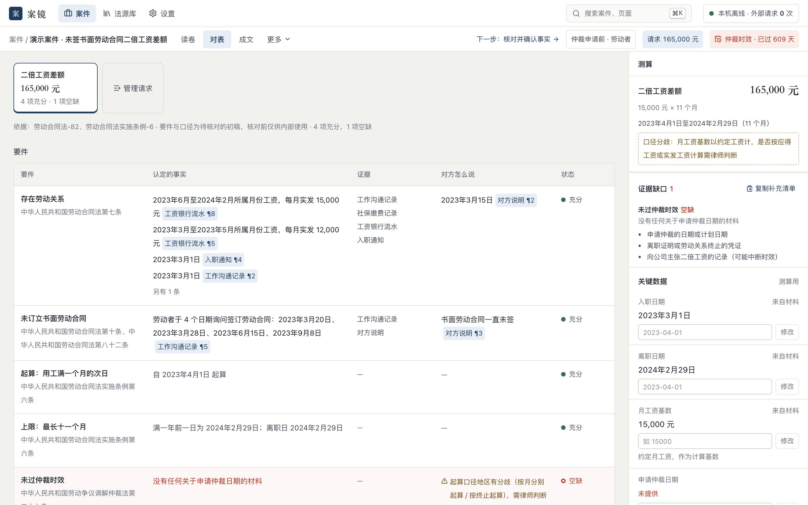
引用与数据
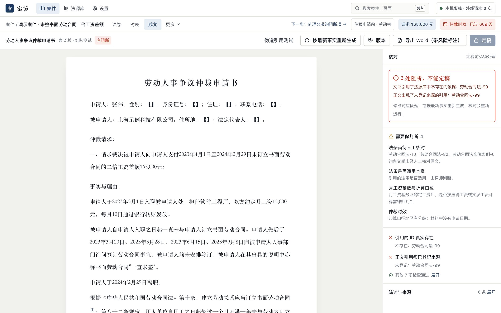
成文页有一个“伪造引用测试”，向草稿里加入一条不存在的法条。核对立刻写明是哪一条、为什么，定稿按钮锁住。通过的检查项折叠起来，只显示需要处理的。
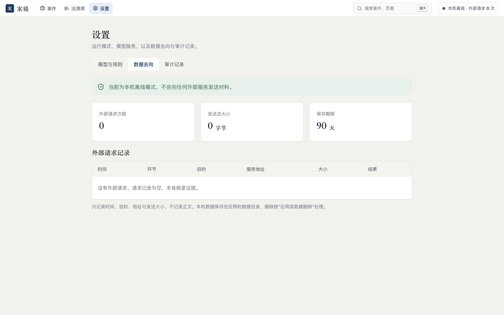
默认是本机离线模式，不向任何外部服务发送材料，请求记录为空。配置外部模型后，每次运行前确认发送内容，材料先脱敏；只记录时间、环节、地址和大小，不记录正文。
视频
用同一个演示案件，从导入材料走到定稿。
律所常问的几件事。没有覆盖到的，欢迎直接联系我们。
取决于你选择的模型服务。离线模式不发出任何外部请求；接入外部模型时，服务地址、请求次数和发送大小都会在“设置 · 数据去向”里列出，是否使用由你决定。
我们不对数据安全做绝对承诺。能做到的是：发送去哪里你看得见，只记录元信息不记录正文，发送前脱敏并经你确认。试用建议只用脱敏或虚构的材料；敏感信息是否交给外部服务，按所里的规定和当事人的同意办理。
案镜是辅助工具，结论由律师审核并负责。引用是否存在、引文是否在原文、日期金额是否一致，由代码核对；法律适用留给律师判断。
不会。策略、取舍、和解、风险偏好始终属于律师。案镜减少的是翻卷宗、对数据、整理格式这类重复劳动。
问答给你一段话。案镜围绕一个案件工作：材料、事实、要件、证据、文书共用同一份资料，每条结论可以回到原文，改一处，相关结果同步变化。
文书里的每处引用，由代码核对是否存在于法源库；不存在的会被阻断。但“存在”不等于“适用正确”，适用性由律师判断。法源库以人工核对为准，并标注核对日期；尚未核对的标“待核对”，演示用的合成案例会标明不得作为真实引用。
目前聚焦劳动争议，请求库有六项：二倍工资差额、经济补偿、违法解除赔偿金、加班费、拖欠工资、未休年休假工资。其中二倍工资差额的事实可由材料自动抽取；其余请求的事实，需要律师在对表里关联到要件。这六项的要件、口径和条文目前都是待核对的初稿。我们不声称已覆盖所有案由。
案镜以本地安装为主，数据放在你的电脑上。模型服务地址可以配置，也可以指向所里自己的服务。具体方式请与我们沟通。
能。文书导出为 docx，证据目录导出为 xlsx，也可以导出成果包。导出之后在 Word 里的修改不会回到系统，系统只记录导出的版本。